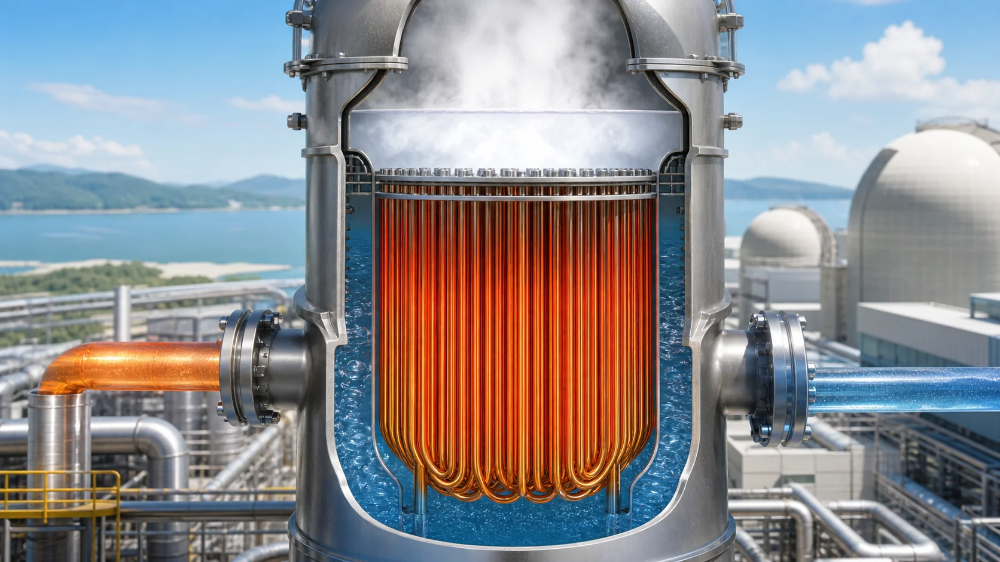
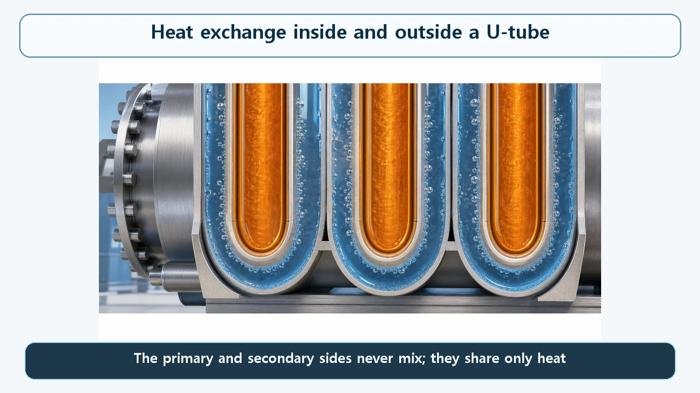
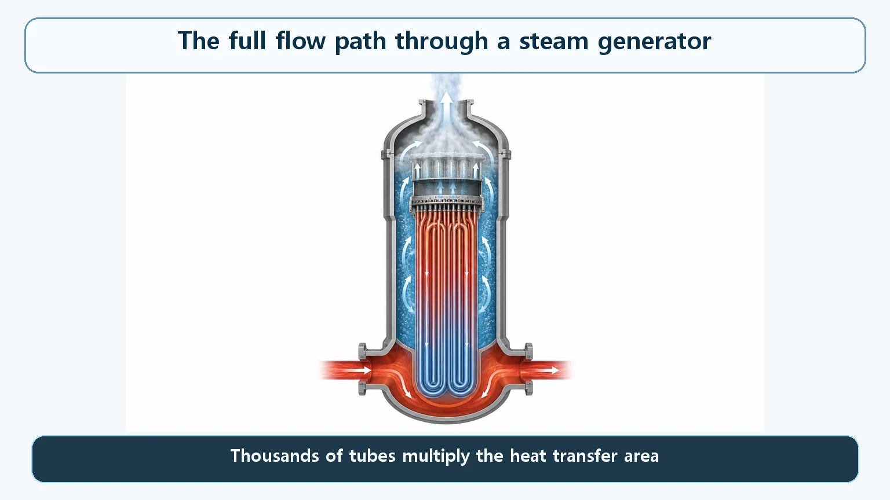

Heat Transfer & Thermal Hydraulics · 147
A Radiator Split into Thousands of Pieces — Heat Exchange in Steam Generator Tubes
Inside the tube, hot pressurized water that never boils; through the wall, conduction; outside, bubbles that carry heat away. The modest temperature difference is why area matters.

Across one thin steam generator tube wall, three different kinds of heat transfer work in series: forced convection inside, conduction through the wall, and nucleate boiling outside. Because the temperature difference between the two sides is only a few tens of degrees, the steam generator gains the area it needs by bundling thousands of slender tubes.
A radiator, multiplied by thousands
The basic idea of a heat exchanger is that a hot side and a cold side sit on either side of one thin wall and trade only heat, never mixing. A car radiator is a pocket-sized version: hot coolant runs through thin tubes while outside air brushes past and carries the heat off.
Now keep that principle and multiply the number of tubes by thousands. Make each tube much slimmer, but pack in more of them than you can easily picture. The giant radiator you end up with is a nuclear power plant's steam generator. Let's zoom in on just one of those tubes and the thin metal wall around it. What happens across that single wall that turns reactor heat into steam?

Inside the tube: water that is hot but not boiling
The water inside the tube is the hot coolant of the primary system, fresh from the reactor. A pump drives it hard, so it swirls chaotically through the tube (turbulent flow). Swirling water strikes the wall far more often and harder than calm water, so it hands its heat to the wall efficiently. Heat passing from a flowing fluid to a solid wall is convection; when a pump drives the flow, it is forced convection.
Note that this water is at around 300 °C, yet it doesn't boil. The primary system is held at a very high pressure, so at this temperature the water is still well below its boiling point. Inside the tube, only relatively simple physics takes place: hot liquid warming the wall.
One thin metal wall: conduction
The heat now has to pass straight through the metal itself: conduction. Steam generator tubes are made of a special corrosion-resistant nickel alloy, and the wall is very thin, about 1 millimeter, roughly the thickness of a few sheets of paper.
A thinner wall means a shorter path for the heat. But this wall is also a pressure boundary that holds in the primary system, which may contain radioactive material. So it can't simply be made as thin as possible: today's thin nickel-alloy wall balances heat transfer against strength and corrosion resistance.
Outside the tube: bubbles that carry heat away
Across the wall, the heat meets the secondary system's water. The secondary system is held at a much lower pressure than the primary, so its boiling point is lower, and the water touching the tube surface actually boils.
The water doesn't churn violently as a whole. Instead, tiny bubbles form densely all over the hot tube surface and quickly pop off. This is nucleate boiling. Each bubble leaves like a courier with a load of heat on its back, so heat is carried away much faster than if the water were merely being warmed. Nucleate boiling is a normal, desirable process. Situations where boiling turns violent and dangerous (critical heat flux or film boiling) are a different story, and steam generators are designed to stay within the safe nucleate-boiling range throughout normal operation.
A three-leg relay, and why thousands of tubes are needed
Heat passes through three steps in order: hot primary water strikes the wall (convection), crosses the thin metal (conduction), and boils the secondary water into steam (boiling). The three legs share one path, so if any one slows down, the whole relay slows down.
That raises a question: the heat one steam generator must move is enormous, on a par with the reactor's power, yet the temperature difference between the primary and secondary sides is only roughly a few tens of degrees. With such a modest push, how does all that heat get moved? The answer is area:
Q = U × A × ΔT
| Symbol | Meaning | Can it be raised freely? |
|---|---|---|
| Q | Heat moved per unit time | Must stay large (on a par with reactor power) |
| U | Overall heat transfer coefficient, combining the three legs | No, physical limits |
| ΔT | Primary–secondary temperature difference | No, only a few tens of degrees |
| A | Total tube surface area | Yes: thousands of slender U-tubes |
Bend slender tubes into U-shapes and bundle thousands of them tightly, and you fit far more surface area into far less volume than a few thick pipes could give. That is why a steam generator holds thousands of tubes.

One side cools, the other keeps boiling
Follow the temperature along a tube and an asymmetry shows up. The primary water keeps giving up heat, so its temperature falls steadily, from about 320 °C going in to the 280s going out (representative values that vary by reactor type and size).
The secondary water is boiling. While water boils, added heat goes into turning water into steam rather than raising its temperature, so as long as the pressure stays constant, the temperature sits almost unchanged near the boiling point for that pressure. The primary temperature keeps dropping while the secondary temperature stays nearly put, so the temperature difference, the push that drives the heat, is largest near the tube inlet and narrows toward the outlet.
Easy places to get confused
"What a steam generator is" and "how heat moves through its tubes" are different questions. Why it separates the primary and secondary systems and acts as a barrier is a separate topic; here the focus is the mechanism of heat flow and why it takes thousands of thin tubes.
The boiling described here is not the dangerous kind. Nucleate boiling moves heat very efficiently. Phenomena where boiling itself deteriorates because the heat flux becomes too high or cooling falls short (critical heat flux, film boiling) are a different subject, mostly discussed in terms of the thermal margins of the reactor core.
The one-line takeaways
- Three kinds of heat transfer run in series across one thin wall: forced convection → conduction → nucleate boiling.
- None of the legs has negligible resistance; if one worsens, the whole relay slows.
- Big heat load, modest ΔT: in Q = U × A × ΔT the lever left is area, hence thousands of slender tubes.
- The primary side cools along the tube while the boiling secondary side stays nearly constant, so ΔT narrows toward the outlet.
- This is normal nucleate boiling, not boiling near a danger limit.